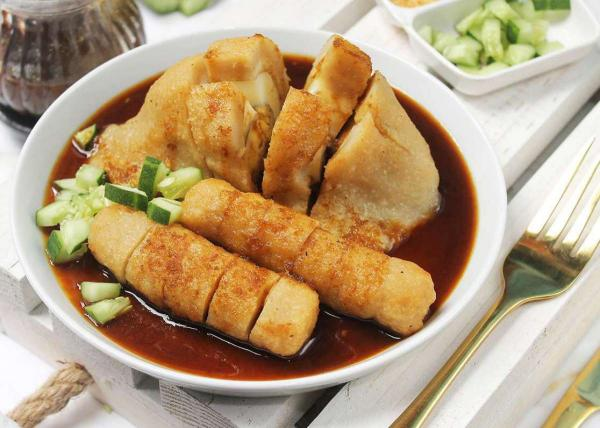
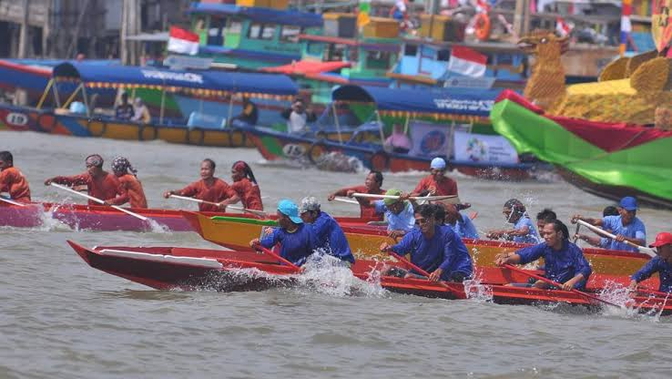

Destinasi Ikonik Musi
Mulai dari Jembatan Ampera, Benteng Kuto Besak era kesultanan, Pagoda Pulau Kemaro, hingga Masjid Agung tiga peradaban.
Lihat Destinasi →Saksikan perpaduan agung sejarah kemaharajaan maritim dunia, megahnya Jembatan Ampera yang membelah aliran Sungai Musi, kelezatan otentik Pempek bertabur cuko sedap, keindahan tenun Songket berbenang emas, serta kemeriahan lomba Perahu Bidar legendaris.
Usia Kota Berdasarkan Prasasti Kedukan Bukit (682 M)
Panjang Sungai Musi Pembelah Wilayah Ulu & Ilir
Bentangan Megah Jembatan Ampera Ikon Kebanggaan
Khazanah Kuliner, Wastra Songket & Seni Budaya
Menghadirkan pengalaman penjelajahan menyeluruh yang menghubungkan masa lalu yang agung dengan dinamika metropolitan modern.
Mulai dari Jembatan Ampera, Benteng Kuto Besak era kesultanan, Pagoda Pulau Kemaro, hingga Masjid Agung tiga peradaban.
Lihat Destinasi →Rekam jejak tertulis kota tertua di Indonesia melalui Prasasti Kedukan Bukit dan kemaharajaan maritim penguasa jalur rempah.
Buka Catatan Sejarah →Kelezatan Pempek beragam varian, Tekwan kaldu udang sedap malam, serta Mie Celor kental dengan tradisi ngirup cuko.
Cicipi Ragam Kuliner →Kemewahan Kain Songket bertabur benang emas lepus murni, seni ukir tembesu cat prada emas, dan Tari Gending Sriwijaya.
Eksplorasi Mahakarya →Semarak adu cepat Perahu Bidar di Sungai Musi, Ziarah Kubro ulama terkemuka, hingga tata rias megah pengantin Aesan Gede.
Saksikan Tradisi →Pilihan objek wisata bersejarah, religius, dan lanskap sungai terindah yang wajib Anda kunjungi.
 Ikonik Musi
Ikonik Musi
Jembatan legendaris sepanjang 1.177 meter yang dibangun tahun 1962 atas instruksi Presiden Soekarno. Titik terbaik menikmati matahari terbenam dan lampu malam tepi Sungai Musi.
 Cagar Sejarah
Cagar Sejarah
Satu-satunya benteng keraton batu bata di Indonesia yang dibangun sendiri oleh kesultanan pribumi (abad ke-18). Menghadap langsung ke Sungai Musi dengan plaza kuliner malam.
 Religi & Bahari
Religi & Bahari
Pulau delta di tengah Sungai Musi yang tidak pernah tenggelam. Terkenal dengan pagoda megah 9 tingkat, Kelenteng Hok Tjing Rio, serta legenda cinta Tan Bun An dan Siti Fatimah.
 Wisata Religi
Wisata Religi
Masjid bersejarah yang didirikan tahun 1738 M. Memperlihatkan akulturasi arsitektur mengagumkan antara atap limas tumpang Nusantara, ornamen Tionghoa, dan pilar Neoklasik Eropa.
 Situs Arkeologi
Situs Arkeologi
Kawasan cagar budaya seluas 20 hektar pusat peradaban maritim Sriwijaya abad ke-7. Menyimpan artefak perahu kuno, kanal buatan, dan replika Prasasti Kedukan Bukit.
Heritage Village
Perkampungan tepi Sungai Musi peninggalan saudagar Hadramaut Yaman sejak abad ke-18. Memiliki deretan rumah pusaka berusia 250 tahun dengan suasana islami yang asri.
Palembang bukan sekadar kota di tepian sungai, melainkan pusat kemaharajaan bahari terbesar yang pernah disegani di seantero Asia Tenggara: Kedatuan Sriwijaya.
"Swasti! Cri Cakawarsatita 604 ekadaci cu-klapaksa wulan Waisakha Dapunta Hiyan nayik di samwau mangalap siddhayatra di saptami cuklapaksa wulan Jyestha Dapunta Hiyan marlapas dari Minanga Tamwan... marwuat vanua Criwijaya jayasiddhayatra subhiksa."
Artinya: Selamat dan bahagia! Pada tahun Saka 604 hari kesebelas paro terang bulan Waisakha, Dapunta Hyang naik perahu mencari berkah kesaktian. Pada hari ketujuh paro terang bulan Jyestha, beliau berangkat membawa 20.000 bala tentara, lalu mendirikan perkampungan kota (wanua) Sriwijaya yang jaya, makmur, dan sejahtera.
Ekspedisi Siddhayatra Dapunta Hyang mendirikan kota di Palembang, menjadi dasar resmi penetapan Hari Jadi Kota Palembang tertua di Indonesia.
Biksu Tiongkok I-Tsing mencatat Palembang sebagai pusat studi bahasa Sanskerta dan ajaran Buddha Mahayana internasional sebelum menuju Nalanda, India.
Dipimpin oleh Sultan Ratu Cinde Walang (Ki Gede Ing Suro), Palembang berkembang menjadi kesultanan maritim Islam yang makmur dengan komoditas timah dan lada.
Pertempuran dahsyat mempertahankan Benteng Kuto Besak dari gempuran armada tempur kolonial Belanda di bawah komando Jenderal De Kock.
Ditemukan pada 29 November 1920 di Kampung Kedukan Bukit di tepi Sungai Tatang Palembang. Beraksara Pallawa dan berbahasa Melayu Kuno, prasasti ini menjadi akta lahir autentik Kota Palembang.
Pada abad ke-19, penjelajah Barat menjuluki Palembang sebagai "Venesia dari Timur" karena terdapat lebih dari 100 anak sungai yang mengalir dan ribuan rumah rakit (rakit terapung) di atas Sungai Musi.
Menyelami kenikmatan olahan ikan sungai berpadu ketajaman kuah cuko gula aren batok yang tiada duanya.

Ikon Kuliner NasionalMahakarya kuliner berbahan dasar daging ikan segar cincang dan tepung sagu tani. Mulai dari varian Kapal Selam berisi telur bebek, Lenjer kenyal, Adaan harum bawang, hingga Pempek Kulit renyah krispi.
 Sup Tradisional
Sup Tradisional
Bulatan adonan ikan kenyal yang disajikan di dalam kuah kaldu rebusan kepala udang satang yang harum gurih. Dilengkapi isian bengkuang renyah, jamur kuping hitam, bunga sedap malam kering, soun, dan taburan seledri.
 Sarapan Legendaris
Sarapan Legendaris
Mie kuning basah bertekstur tebal yang diseduh singkat bersama tauge, lalu diguyur kuah kental gurih berwarna putih gading dari sari udang pekat, santan kelapa murni, kocokan telur bebek, irisan telur rebus, dan kucai segar.
Keterampilan adiluhung para maestro pengrajin yang memadukan estetika kemewahan istana dengan nilai spiritual luhur.
 Queen of Fabrics
Queen of Fabrics
Kain tenun mewah warisan era Sriwijaya yang ditenun secara tradisional menggunakan alat gedogan. Helai benang sutra disungkit dengan susunan benang emas murni atau perak. Motif legendaris seperti Songket Lepus, Limar, dan Bintang Berantai mencerminkan status martabat agung.
 Kemewahan Keraton
Kemewahan Keraton
Seni pahat kayu khas Palembang yang diaplikasikan pada dinding Rumah Limas, mimbar masjid, dan lemari hias. Menggunakan kayu pohon tembesu yang sangat awet, lalu dipahat dengan motif sulur tumbuhan tropis dan dilapisi cat prada emas berkilau berlatar warna merah marun.
 Seni Tari Klasik
Seni Tari Klasik
Tarian klasik nan agung yang dipentaskan khusus untuk menyambut tamu-tamu kehormatan. Dibawakan oleh 9 penari putri berbusana Aesan Gede dengan lentiknya kuku keemasan (tanggai). Penari utama mempersembahkan kapur sirih dalam kotak perada emas (tepak) sebagai perlambang ketulusan hati.
Harmoni antara ajaran keislaman, penghormatan leluhur, serta semangat gotong royong masyarakat pesisir Sungai Musi.

Pesta Rakyat KolosalAtraksi adu cepat perahu kayu sepanjang 29 meter yang dipahat dari sebatang pohon utuh berornamen kepala naga. Diawaki oleh 55 orang pendayung tangguh, 1 juru mudi, 1 juru kuras air, dan 1 pemukul tambur yang membelah riak arus Sungai Musi di hadapan ribuan penonton.
 Tradisi Religi Sakral
Tradisi Religi Sakral
Perarakan massal puluhan ribu jamaah dan kaum muslimin berbusana putih bersih yang berziarah ke makam-makam para sultan, auliya, dan ulama penyebar Islam di Palembang (seperti Kawah Tengkurep dan Kambang Koci) diiringi lantunan qasidah dan shalawat nabi yang syahdu.
Pelajari Rute Ziarah Kubro → Busana Kebesaran Adat
Busana Kebesaran Adat
Pakaian adat kebesaran para raja dan permaisuri Sriwijaya. Mempelai perempuan mengenakan mahkota Gandik Karsuhun keemasan dengan hiasan kembang cempako, penutup dada Teratai permata, serta balutan kain Songket Lepus berlapis benang emas murni yang sangat anggun.
Segala informasi krusial mulai dari transportasi modern LRT, waktu berkunjung terbaik, hingga tanya jawab seputar wisata.
Rahasia cuko asli Palembang terletak pada pemilihan gula aren batok berkualitas tinggi asal Curup atau Lubuklinggau yang berwarna cokelat tua kehitaman dan gurih pekat alami. Pengolahan cuko tidak boleh menggunakan cuka sintetis (cuka dapur kimia), melainkan wajib mengandalkan asam jawa murni, bawang putih kating lokal, cabai rawit hijau segar yang ditumbuk halus, serta taburan bubuk udang rebon (ebi) sangrai.
Wisatawan dapat menuju dermaga Benteng Kuto Besak (BKB) atau dermaga Pasar 16 Ilir. Dari sana, Anda dapat menyewa perahu motor tradisional (dikenal sebagai "Perahu Ketek") atau speedboat. Waktu tempuh sekitar 20 hingga 30 menit menyusuri Sungai Musi. Tarif sewa perahu ketek pulang-pergi berkisar antara Rp 150.000 hingga Rp 250.000 per kapal (dapat memuat 5–8 orang, sangat hemat jika rombongan). Masuk ke kawasan Pulau Kemaro sendiri gratis.
LRT Sumatera Selatan melintasi 13 stasiun modern dari Bandara Sultan Mahmud Badaruddin II hingga ke kompleks olahraga Jakabaring Sport City. Untuk rute dari Bandara menuju Stasiun Ampera (tepat di samping Jembatan Ampera dan Masjid Agung), tarifnya hanya Rp 10.000 per penumpang dengan waktu tempuh sekitar 35 menit bebas macet dan berpendingin udara (AC) nyaman.
Songket Palembang tenun tangan dihargai tinggi karena proses pembuatannya yang sangat rumit menggunakan alat tenun bukan mesin (gedogan). Penenun harus menghitung helai demi helai benang sutra dengan ketelitian matematis tinggi untuk menyungkit benang emas murni. Satu helai kain songket lepus bermotif padat membutuhkan waktu pengerjaan 1 hingga 3 bulan penuh. Nilai historisnya sebagai lambang busana kebesaran istana Kerajaan Sriwijaya menjadikannya investasi warisan seni bernilai tinggi.
Durasi ideal adalah 3 hari 2 malam (3D2N). Hari pertama dapat difokuskan pada kawasan tepian Sungai Musi (Jembatan Ampera, Benteng Kuto Besak, Museum SMB II, dan wisata kuliner malam 26 Ilir). Hari kedua dialokasikan untuk susur sungai ke Pulau Kemaro, Taman Purbakala Kerajaan Sriwijaya, Kampung Arab Al-Munawar, dan belanja songket di Tangga Buntung. Hari ketiga untuk wisata belanja kerupuk kemplang dan oleh-oleh sebelum menuju bandara via LRT.
Ingin berkonsultasi seputar jadwal festival Perahu Bidar, rekomendasi pemandu lokal sejarah Sriwijaya, atau paket tur kuliner pempek? Kirimkan rencana kunjungan Anda di bawah ini!
Jl. Sultan Mahmud Badaruddin II No. 1, 19 Ilir, Bukit Kecil, Kota Palembang, Sumatera Selatan 30113
wisata@palembang-sriwijaya.id / info@disbudpar.palembang.go.id
+62 (711) 351-400 / WhatsApp: 0812-7890-MUSI